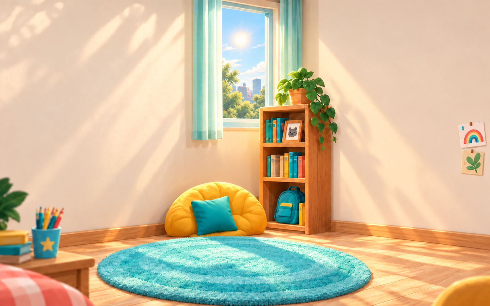

Üç yeni oda arkadaşı.
Onaylanan kedinin görsel dilinde; köpeğe, maymuna ve aslan yavrusuna özgü hareketler. Her hayvanın mevcut V5 çizimi kaynak alındı. Videolar sessizdir.
Esneme
Onaylı V5 kaynak
Video girişinde bu çizim yeniden çizilmedi veya büyütülmedi; yalnız hareket için çevresine boşluk eklendi.
Odasındaki boyutuyla
Aynı V5 oda ve karakterle sanat montajı; uygulama kaydı değildir.

Üçünü birlikte karşılaştır
Soldan sağa köpek, maymun, aslan yavrusu. Üst sıra uyku, alt sıra esneme. Orijinal oynatma hızı.
Hareket incelemesi. Şeffaflık, anatomi, döngü ve karakter kimliği birlikte değerlendirilmeli. Kaynak MP4 ve şeffaf WebM'ler hazır; native uygulama entegrasyonu ve fiziksel cihaz performans kabulü bu paketin kapsamında değildir.